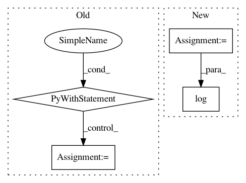

447885e15243dd18d906e2e35ac34ec6dcf9a600,Reinforcement_learning_TUT/7_Policy_gradient/RL_brain.py,PolicyGradient,_build_net,#PolicyGradient#,129
Before Change
// build target_net
self.s_ = tf.placeholder(tf.float32, [None, self.n_features], name="s_")
with tf.variable_scope("target_net"):
self.q_next = self._build_layers(self.s_, self.n_actions, trainable=False)
def _build_layers(self, inputs, action_size, trainable):
layers_output = [inputs]
for i, n_unit in enumerate(self.hidden_layers):
with tf.variable_scope("layer%i" % i):
After Change
self.fake_targets = tf.placeholder(tf.float32, [None, 1], name="fake_targets") // fake targets
self.advantages = tf.placeholder(tf.float32, [None, 1], name="advantages") // advantages
l1 = self._add_layer("hidden0", self.x_inputs, self.n_features, 10, tf.nn.relu) // hidden layer 1
self.prediction = self._add_layer("output", l1, 10, 1, tf.nn.sigmoid) // predicting for action 0
with tf.name_scope("loss"):
loglik = self.fake_targets*tf.log(self.prediction) + (1 - self.fake_targets)*tf.log(1-self.prediction) //
self.loss = -tf.reduce_mean(loglik * self.advantages)
with tf.name_scope("train"):
self._train_op = tf.train.RMSPropOptimizer(self.lr).minimize(self.loss)
In pattern: SUPERPATTERN
Frequency: 3
Non-data size: 4
Instances
Project Name: MorvanZhou/tutorials
Commit Name: 447885e15243dd18d906e2e35ac34ec6dcf9a600
Time: 2016-12-30
Author: morvanzhou@hotmail.com
File Name: Reinforcement_learning_TUT/7_Policy_gradient/RL_brain.py
Class Name: PolicyGradient
Method Name: _build_net
Project Name: explosion/prodigy-recipes
Commit Name: 59a5632f2c57bb4747849863c5ba0c33077dceb3
Time: 2019-06-25
Author: balaabhijit5@gmail.com
File Name: image/tf_odapi/image_frozen_model.py
Class Name:
Method Name: get_predictions
Project Name: facebookresearch/ParlAI
Commit Name: 06bb64cd6f06413528f5c634da7517350541adeb
Time: 2018-02-05
Author: kshuster@fb.com
File Name: examples/extract_image_feature.py
Class Name:
Method Name: main